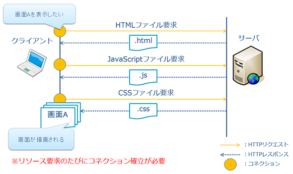
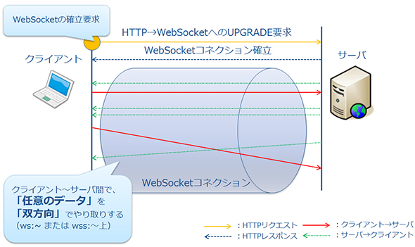

| heartbeat timeout | 10s |
| heartbeat interval | 5s |
| init | roomへの入室 | socket.join, io.to(room_id).emit('ready', data)(送信者も含めて通知) |
| ready | 入室したことの通知 | io.to(送信者も含めて通知) |
| game_start | 対戦相手も入室しているか確認してゲームスタート | io.to(送信者も含めて通知) |
| battle_info | 状況の共有（技の情報、点数など） | socket.broadcast.to(送信者以外に通知) |
| final_result | 最終結果の通知 | io.to(送信者も含めて通知) |
| count_down | サーバサイドでカウントダウンした結果を通知 | io.to(送信者も含めて通知) |
| disconnect | disconnectの通知 | io.to(送信者も含めて通知) |
io.on('connection', (socket) => {
socket.broadcast.emit('an event', { some: 'data' }); // everyone gets it but the sender
});
namespace.to('level1').emit('an event', { some: 'data' });

